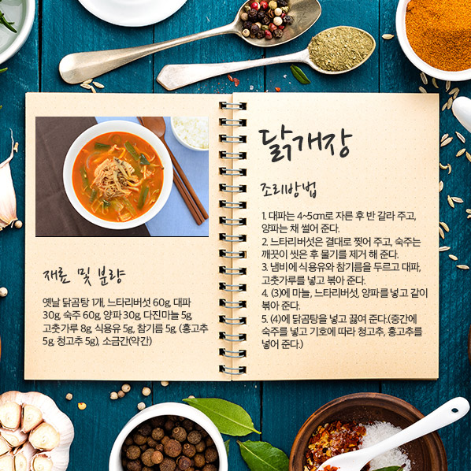
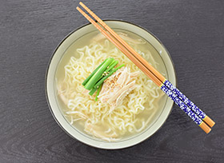
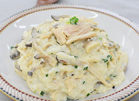
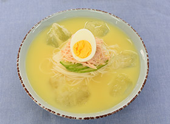
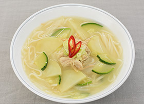

쿠킹 & 스토리
쿠킹 & 스토리
오뚜기의 제품을 이용하여 맛있고, 영양 가득한 음식을<
더 즐겁게 요리할 수 있는 레시피를 알려드립니다.
홈
쿠킹 & 스토리
쿠킹 & 스토리
재미있고 유익한 쿠킹 스토리로 가득합니다

1번 슬라이드

닭곰탕라면
한식 > 면

치킨 크림 리조또
양식 >파스타

초계국수
한식 > 면

닭칼국수
한식 > 면
전체 레시피
아래 분류 기능을 이용하여 편리하게 레시피를 검색해 보세요.
전체
한식
양식
중식
일식
퓨전
카레
사골곰탕
마요네즈
선택하세요
떡
찌개/전골
조림/볶음
구이
튀김/부침
찜
생채/무침
면
밥/죽
국/탕
쌈
김치/장아찌
음료/한과
총 541건의 제품이 있습니다.
최신순
조회순
강황야채피클
양식 > 샐러드
자세히 보기
단호박파운드케이크
양식 > 빵/케익/쿠키
자세히 보기
쨈샌드쿠키
양식 > 빵/케익/쿠키
자세히 보기
강황야채피클
양식 > 샐러드
자세히 보기
단호박파운드케이크
양식 > 빵/케익/쿠키
자세히 보기
쨈샌드쿠키
양식 > 빵/케익/쿠키
자세히 보기
강황야채피클
양식 > 샐러드
자세히 보기
단호박파운드케이크
양식 > 빵/케익/쿠키
자세히 보기
쨈샌드쿠키
양식 > 빵/케익/쿠키
자세히 보기
강황야채피클
양식 > 샐러드
자세히 보기
1
2
3
4
5
6